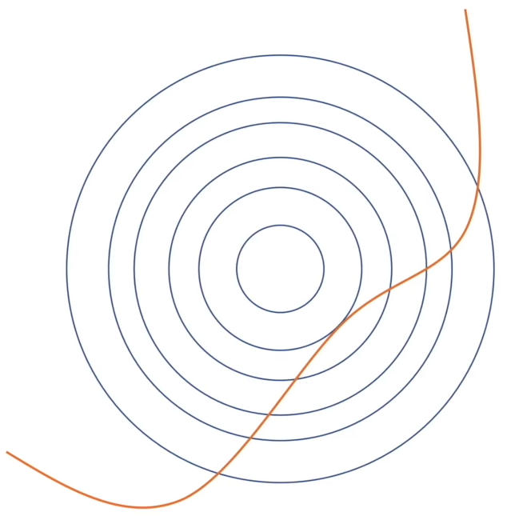
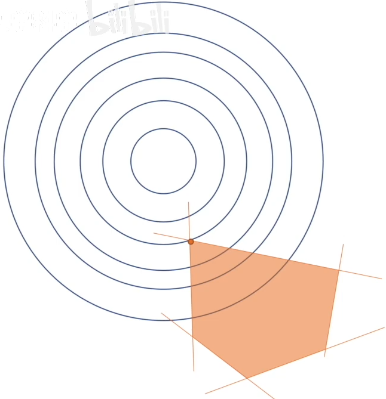
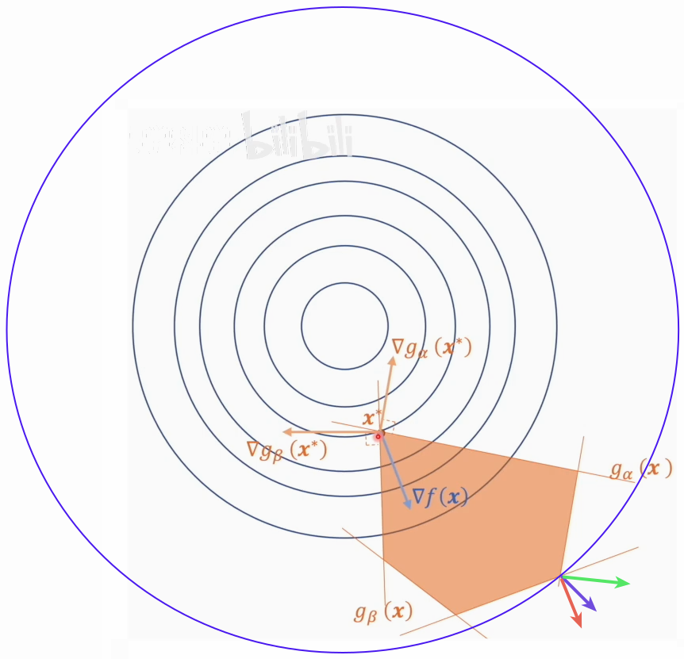

Table of contents
10“拉格朗日对偶问题”如何直观理解？“KKT条件” “Slater条件” “凸优化”打包理解
10.1 拉格朗日乘数法
-
一种寻找多元函数在其变量受到一个或多个约束条件时的极值的方法（自变量的取值范围有限制）
-
将一个有n个变量与k个约束条件的最优化问题转换为一个解有 n+k 个变量的方程组的解的问题。
-
对每个约束条件用拉格朗日乘子(待定系数) λᵢ 加权，加到目标函数后面，就是拉格朗日函数。 拉格朗日函数与目标函数的最值是一样的，所以求目标函数的最值就转化为求拉格朗日函数的最值。
$$ \begin{aligned} 目标函数求最小值：& min\ f_0(𝐱),\quad 𝐱 ∈ ℝⁿ \\\ m个约束条件：& s.t. \quad f_i(𝐱) ≤ 0,\ 其中 i=1,2,3...m \\\ 拉格朗日函数：& L(𝐱,\pmb{λ}) = f_0(𝐱) + \sum λ_i f_i(𝐱) \end{aligned} $$ -
目标函数被加上了约束条件，变量只能在规定的范围内取值，求导得到的极值点可能不在规定范围内，而在规定范围内可能也没有极值点。拉格朗日乘数法把带约束问题转化为无约束问题。
-
每个约束条件用拉格朗日乘子加权
10.2 用梯度理解Lagrange Multiplier
-
一个约束条件的情况：
求 $f(x,y)$ 的最小值，并且有一个约束条件 $y=g(x)$。
该问题的拉格朗日函数为：$L(x,y) = f(x,y) + λ(y-g(x))$；[约束条件=0 表示一条线]
对拉格朗日函数求梯度，梯度等于0的点就是极值对应的点；
把 $∇ L(x,y) = 0$，沿x,y两个方向展开，调整λ使两个方向上的偏导都为0，也就是梯度在两个方向上的分量都为0：
$$ \begin{cases} \frac{∂f(x,y)}{∂x} + λ\frac{∂(y-g(x))}{∂x} = 0 \\\ \frac{∂f(x,y)}{∂y} + λ\frac{∂(y-g(x))}{∂y} = 0 \end{cases} $$1  2
2在图1中，坐标系是x-y，同心圆是目标函数 $f(x,y)$ 的等高线，圆心点对应的函数值最小，越往外值越大。红线是(x,y)约束条件。
图2显示了两个函数的梯度，只有在相切的位置，目标函数的梯度方向与约束条件的梯度方向才是共线的，再通过拉格朗日乘子 λ 调整向量长短，使两个梯度相加才可能为零。除了相切点位置，都无法实现两梯度之和为零。
-
多个约束条件：
$$ \begin{aligned} 目标函数：& min \ f(𝐱), \quad 𝐱∈ ℝⁿ & \text{(𝐱 是个n维向量)}\\\ m个约束条件：& s.t. \quad g_i(𝐱) = \pmb{a_i^T} ⋅ 𝐱 + b_i ≤ 0, &\text{(m个超平面围成的区域)}\\\ & 其中i=1,2,3...m, \pmb{a_i} ∈ ℝⁿ, \ b_i ∈ ℝⁿ \\\ 拉格朗日函数：& L(𝐱, \pmb λ) = f(𝐱) + \sum λ_i g_i(𝐱) \end{aligned} $$假设有5个一维的约束条件，就是5条直线，并且假设它们围成了一个五边形，还要假设五边形的内部是5个约束条件同时满足的区域，如下图1。
(对于二维平面上的一条直线:$y=ax+b$，想知道 $y≤0$ 表示的是哪块区域，可以根据(x,0)这个点判断。 $y=ax+b ≤0 \Rightarrow x≤\frac{-b}{a}$， 所以在$\frac{-b}{a}$左侧就是规定的区域。 如果a是负数，符号就会改变，从而多条直线能围出一个封闭的限制区域。 )
1 2 对拉格朗日函数求梯度，令其等于零：
$$ \begin{aligned} \pmb ∇ L(𝐱,\pmb λ) = 0 \Downarrow -\pmb ∇ f(\pmb λ) = ∑ λ_i ⋅ \pmb∇ g_i(𝐱) \end{aligned} $$目标函数梯度的反方向应等于所有约束条件的梯度加权和。
由图2可知，真正起贡献的只有两个约束条件在，只需求两个约束条件的梯度和，五边形内部是 ≤ 0，则外部是>0，所以梯度方向指向外面，两个梯度通过 λ 调节成与目标函数梯度等大反向.
两约束条件的交点 x’ 既满足这两个约束条件，在这点的梯度=0：
$$ \begin{aligned} & g_α(x') = g_β(x') = 0 \\ & λ_α ∇ g_α(x') + λ_β ∇ g_β(x') = -∇ f(x) ⇒ λ_α, λ_β≠0 \end{aligned} $$而该点 x’ 也满足其他约束条件 gᵢ(x’)<0，但它们的 λᵢ 都等于0，不起作用: λᵢ∇ gᵢ(x)=0 ⇒ λᵢ=0 (i≠α,β) λ 不能小于 0，否则会把梯度方向取反，会参与梯度叠加。
所有的 λᵢ 都≥0，如果λᵢ=0, 它对应的约束条件 gᵢ(x) 是松弛的；如果λᵢ>0, 它对应的约束条件 gᵢ(x) 是紧致的。约束条件像皮筋，把最优解从最值点拽到了极值点。 当目标函数的最小值落在可行域范围内，则所有的约束条件都是松弛的。
拉格朗日乘数法本质还是求导=0，梯度等于0的点是极值点，但不一定是最值点
KKT 条件中的互补松弛